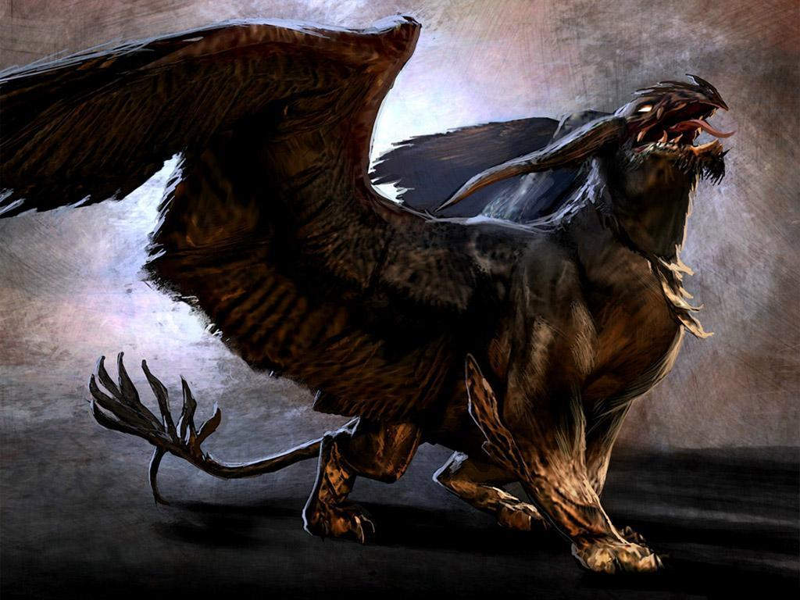
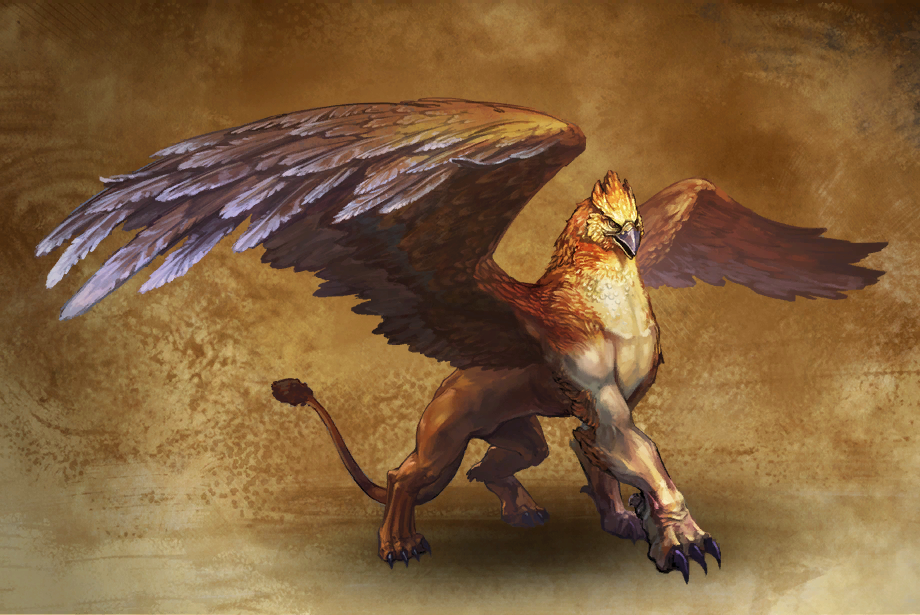

Gryf – mityczne zwierzę przedstawiane najczęściej z ciałem lwa oraz z głową i skrzydłami orła. Niektóre źródła dodają jeszcze uszy dzikiego osła. Na początku gryf pojawia się w sztuce, znacznie później w literaturze, widać także znaczne różnice pomiędzy opisami gryfa a jego obrazowaniem. Najstarsze przedstawienia pochodzą ze starożytnej Mezopotamii z ok. 3000 p.n.e., równocześnie motyw pojawił się w Egipcie. Do Europy dotarł ok. 1600 p.n.e. poprzez wyspy Kretę i Cypr. Pierwsza wzmianka pisana o gryfach pochodzi z ok. V w. p.n.e.
Wygląd gryfa jako lwa z orlimi skrzydłami, przednimi łapami i głową ugruntował się w średniowieczu, gdy gryfy coraz częściej zaczęły się pojawiać w herbach. Wówczas konieczne stało się ustalenie konkretnego obrazowania, które szybko stało się najpopularniejsze. Wcześniej równie często w ikonografii pojawiały się przedstawienia gryfów jako: lwów z orlimi głowami i łapami lwa (nie zawsze występują skrzydła), lwów z orlimi skrzydłami (tylko do czasu, gdy chrześcijaństwo zaczęło wykorzystywać ten obraz jako symbol św. Marka, lwów z tylnymi łapami ptasimi (występujące jedynie w sztuce Azji Mniejsze oraz rzadziej lwów z łapami ptaka.
Heraldyczny gryf jest zawsze rodzaju żeńskiego, chyba że zaznaczono inaczej. Gryf rodzaju męskiego jest bezskrzydły. Taka jego odmiana w XV-wiecznej i późniejszej heraldyce nazywana była alce lub keythong.
Wg innych orkowie zostali stworzeni przez jednego z Valarów (czyli zapewne Morgotha) ze złości lub chęci zakpienia z Dzieci Iluvatara.Orkowie mieli wygląd humanoidalny, podobny do ludzi i elfów, z tą różnicą, że odznaczali się brzydotą oraz zdeformowanymi kształtami twarzy i ciała. Byli niżsi od ludzi, zgarbieni, pokraczni, krępi, barczyści, mieli krzywe nogi, płaskie nosy, skośne oczy i szerokie usta z krzywymi zębami. Odróżniali się między sobą wzrostem, tuszą, itp. Podobnie jak elfowie i ludzie dzielili się na wiele szczepów.

Według mitologii greckiej i rzymskiej, gryfy występować miały m.in. w Scytii – kraju jednookich Arymaspów, kraju Hiperborejczyków, Indiach, Baktrii, Etiopi, czy w okolicach Madagaskaru.
Stwory te miały być okrutne i dzikie z natury, często polować na konie, woły i inne duże zwierzęta.
Były też rzekomo groźne dla ludzi. Gniazda zakładały wysoko w niedostępnych górach. Wierzono, że można je udomowić zaraz po wykluciu z jaj. Od początku istnienia motywu literatura wiązała gryfy ze złotem i skarbami. Miały wykopywać złoto z ziemi lub skał za pomocą potężnych dziobów, zaś w ich gniazdach znajdować się miały agaty, jaspisy i szmaragdy. Miały zażarcie bronić swych skarbów i czasem, podobnie jak smoki, wpatrywać się w nie godzinami. Niektóre źródła wspominały, że gryfy wcale nie zbierają jednak tych skarbów, tylko zamieszkują w złotonośnych górach i walczą jedynie w obronie młodych[16].

Gryf pełnić miał rozmaite funkcje. Miał być strażnikiem skarbu Apollina w kraju Hiperborejczyków[14], ciała Ozyrysa[30], pucharu wina Dionizosa, koła losu Nemezis[31], czy życiodajnej wody i ognia[28]. Stanowiły też zwierzęta zaprzęgowe Apollina, Dionizosa czy Nemezis, a także rzekomo Aleksandra Wielkiego[32]. Ciągnęły również triumfalny powóz Kościoła w Czyśćcu z Boskiej Komedii Dante Alighieriego. W późniejszej literaturze tę funkcję przejęły hipogryfy. Gryfy miały też pilnować świata przed spaleniem promieniami słońca[33].